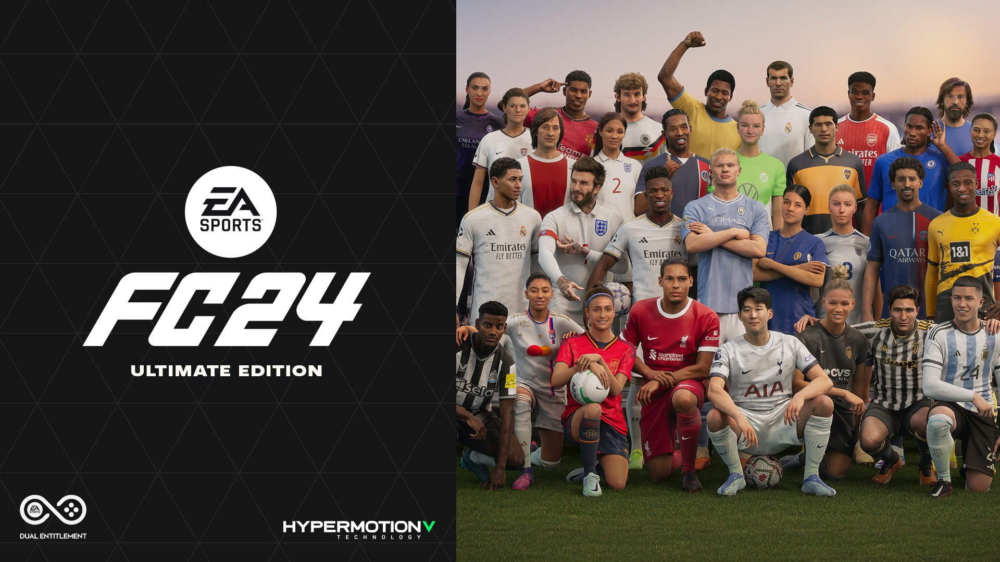
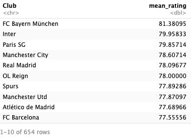
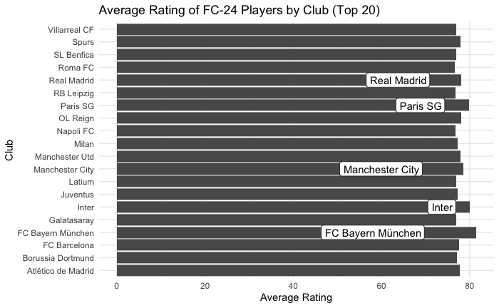
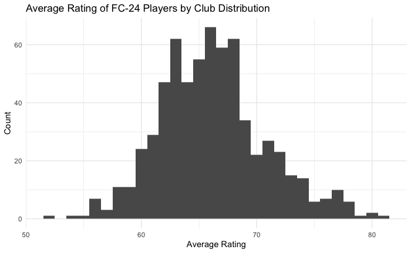
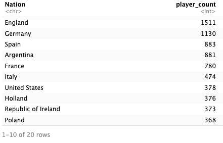
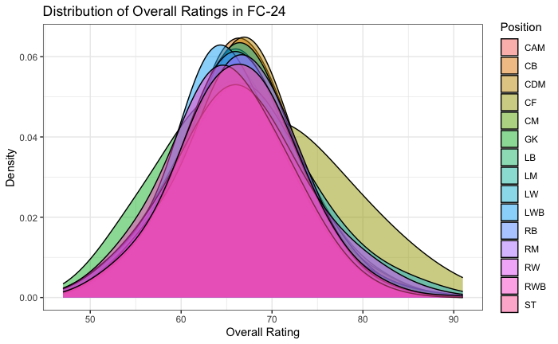

Lokctrw.github.io
Welcome!
This is Lok and on this page you can explore about football players’ rating, search and display your favorite player!
Click Github Link to view the progress…

Some common questions:
1. Which current club has the highest average rating of players?

From the first table, we can see the list of football club ranked in the order by the average rating of players in each team. The top three will be FC Bayern München from Germany, followed by Inter from Italy and Paris SG from France, with a respective average rating of 81.38, 79.96 and 79.86, out of 100.

The graph illustrates the comparison of the Top 20 teams in regards to average rating of players. Where the Top 5 is labelled with the white text box. As shown, the difference between the Top 20 teams is relatively small, ranging from 81.38 of FC Bayern München to 76.63 from Roma FC.

But what if we compare the average player rating with every professional teams, the result is illustrated by the graph above. As one can see, majority of the teams have an average rating between 60 to 70, and is approximately follows a normal distribution. Therefore, one can suggest that it is extremely difficult to have a team average rating above 75, which can be considered as the Top teams around the world.
2. Which country has the highest count of professional players?

From the table, ranked by the number of professional football players in each country, we can see England has the highest count of professional player, over 1500 registered players, followed by Germany and Spain. Interestingly, despite having the greatest number of players, England only won the World Cup once, all the way back in 1966.

By illustrating these data using graphs, one can tell that the number of players in each countries differ significantly, with only the Top 5 countries having a count over 500 players, where the difference between the 1st and 6th place to be larger than 1000, England and Italy, 1511 and 474 respectively. From these results, one could argue that the national team performance is not solely dependent on the number of players registered in the country.
3. What percentage of players have a overall rating higher than 80, what does that imply?
The answer is 2.240454%!

Looking from the view of individual player, it has always been a common sense that it is extremely difficult to become a player that compete at the top level of football. How difficult is that exactly? Only 2.24% of all the players obtain a rating higher than 80.
As shown by the distribution plot, majority of the players have a rating between 60 to 70, and only a small portion have rating over 80. However, as indicated by the different color of distribution corresponding to players’ position, one can tell that it is even more difficult to be one of the top player if the position is striker (ST, RW, LW), relatively to other positions. Therefore, this illustration shows clearly how much efforts are required for one to be a top class player.
FINALLY~ search your favorite player!
Type in the search bar your favorite player (e.g. Lionel Messi)
Scroll to the right to view detail categorical rating of each player
Key in the players’ row number to view their categorical rating! (e.g. Lionel Messi is row number 4)
Compare and Contrast!